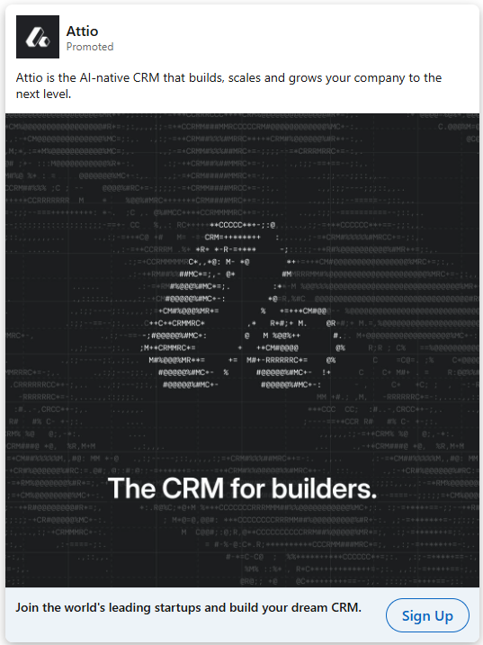
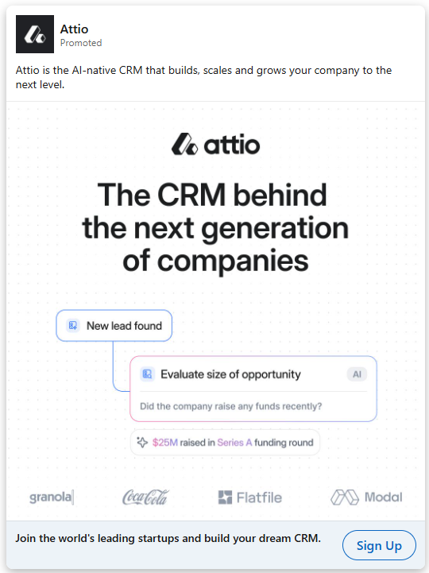
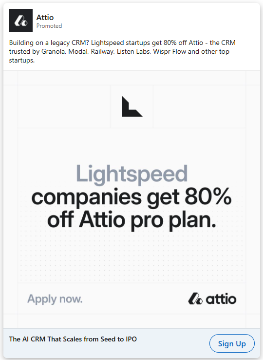
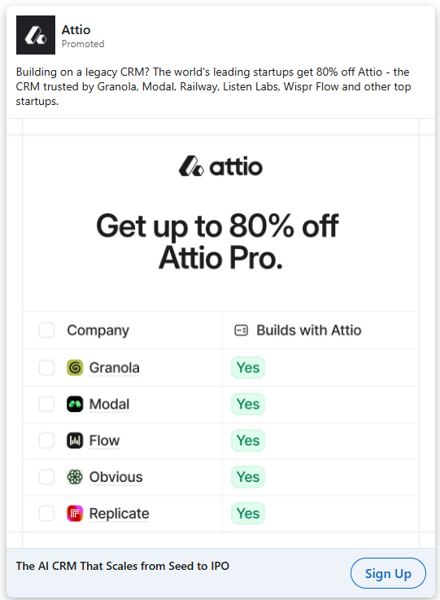
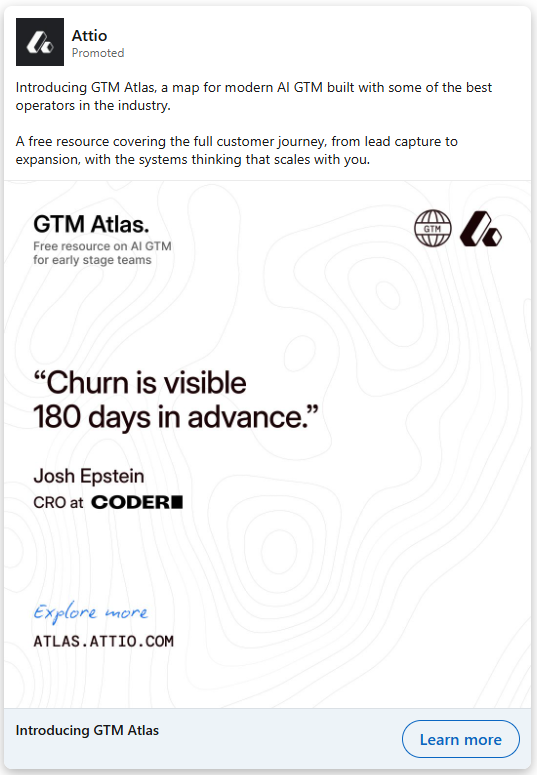

Attio
Promoted
Every CRM wants you to sell its way. The best startups refuse.
Your edge
How you sell is your edge. Don't flatten it.
A rigid CRM makes every team sell the same way.
ATTIO.COM
A CRM that bends to how you sell.
Learn more
On the left, Attio's real paid creative, captured from the feed. On the right, ads regenerated from the ICP, positioning, and messaging we just built. Same brand, same product. The difference is what the message is built on.




